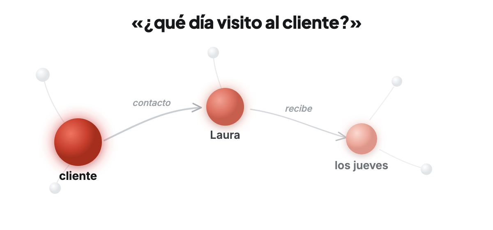

Hace un mes le contaste a tu asistente que tu contacto en el cliente ahora es Laura. La semana pasada, que Laura solo recibe los jueves. Hoy le preguntas: ¿qué día visito al cliente? La frase que responde no habla del cliente ni de visitar: habla de Laura. Solo se llega por asociación. Eso no es buscar: es recordar.
La memoria habitual de un chatbot (RAG) guarda la conversación como texto y recupera lo que más se parece. Pero una conversación no es un documento: lo que importa compite con hechos casi idénticos, cambia con el tiempo y a veces está a varias asociaciones de la pregunta. Oroi guarda la conversación como una red de conceptos y asociaciones con una dinámica tomada de los modelos cognitivos de la memoria humana: lo mencionado se activa, la activación se propaga a lo asociado, lo repetido se consolida —como en el sueño— y el desuso apaga.